• Standard configuration. These Fiber Units are mounted into a hole drilled in a bracket and secured with nuts.
• The Right-angle Model prevents snagging on the cable because the cable runs along the mounting surface.
Building Automation
Industrial Automation
Power Automation and Safety


Bangladesh Distributor
E32 Series
Fiber Sensors

OMRON's Fiber Sensors continue to support an increasing range of applications.
about this Product Family
Related Contents
- Fiber Sensors
- Features
- Lineup
- Specifications
- Dimensions
- Application
- Catalog
last update: May 23, 2013
Standard Installation
Threaded Models
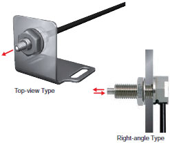
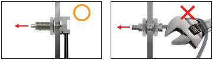
Cylindrical Models
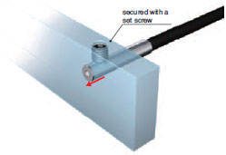
• Inserted where space is limited. (Secured using a set screw.)
• Ultramate space-saving by micro-fiber head. (1 dia. × 10 mm)
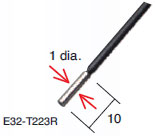
Saving Space
Flat Models
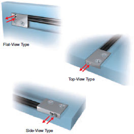
• Thin profile for mounting in limited spaces.
• Mounts directly without using special mounting brackets.
Sleeve Models (Close-range Detection)
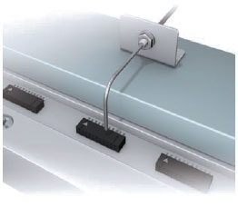
• Sleeve Fiber Units allow detection away from the point of installation for stable close-range detection of small objects.
• The shape of sleeve can be changed freely.
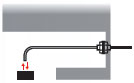
Beam Improvements
Small-Spot, Reflective (Minute Object Detection)
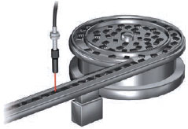
• Small-spot is ideal for detecting minute objects.
Select the Fiber Unit that is best suited for the workpiece size and installation distance.
(Refer to Reference Information for Model Selection)
• Available with a variable-spot Lens Unit to change the spot diameter without replacing the fiber. The spot diameter can
be adjusted according to the size of the workpiece by changing the withdrew length and sensing distance.
Refer to the following graph, which shows the relation between the withdrew length, focal distance, and spot diameter.
Select the Fiber Unit that is best suited for the workpiece size and installation distance.
(Refer to Reference Information for Model Selection)
• Available with a variable-spot Lens Unit to change the spot diameter without replacing the fiber. The spot diameter can
be adjusted according to the size of the workpiece by changing the withdrew length and sensing distance.
Refer to the following graph, which shows the relation between the withdrew length, focal distance, and spot diameter.
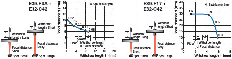
* Withdrew length: Approx. 1.3 to 5.8 mm
High-power Beam (Long-distance Installation, Dust-resistant)
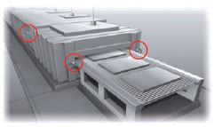
• Maximum sensing distance without attaching a Lens: 20 m (E32-T17L)
Suitable for detection of large objects and for use in large-scale installations.
• Powerful enough to resist the influences of dust and dirt.
• In addition to the products listed on this page, Lenses are available to extend the sensing distance.
Suitable for detection of large objects and for use in large-scale installations.
• Powerful enough to resist the influences of dust and dirt.
• In addition to the products listed on this page, Lenses are available to extend the sensing distance.
Narrow View (Detection Across clearance)
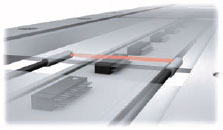
• The fine beam prevents false detection of light that is reflected off surrounding objects.
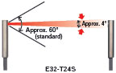
Detection without Background Interference
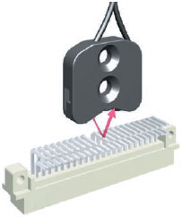
• These Fiber Units detect only objects in the sensing range. Objects in the background that are located beyond a certain
point are not detected.
They are not easily affected by the material or color of the sensing object.
point are not detected.
They are not easily affected by the material or color of the sensing object.
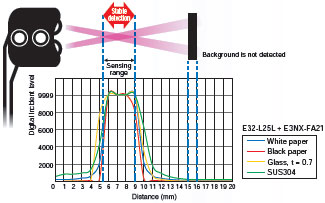
Transparent Object Detection
Retro-reflective
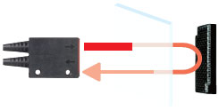
• Retro-reflective Fiber Units are ideal for detecting transparent objects.
The light beam passes through the object twice, this model interrupts light more than Through-beam model.
The light beam passes through the object twice, this model interrupts light more than Through-beam model.
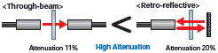
• Excellent detection performance with transparent films. (E32-C31 2M + E39-F3R)
The specially designed filter eliminates undesirable light, which allows significantly more light to be interrupted for
stable detection of films.
The specially designed filter eliminates undesirable light, which allows significantly more light to be interrupted for
stable detection of films.
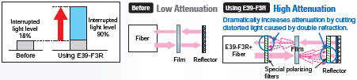
Limited-reflective (Glass Detection)
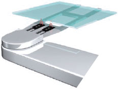
• These Fiber Units are based on a limited-reflective optical system where the emitting light and receiving light axes
intersect at the same angle.
This allows for stable detection of glass because the Fiber Units receives the specular reflection of the glass when the
glass is in the sensing range.
intersect at the same angle.
This allows for stable detection of glass because the Fiber Units receives the specular reflection of the glass when the
glass is in the sensing range.
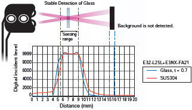
Environmental Immunity
Chemical-resistant, Oil-resistant
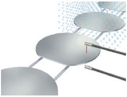
• These Fiber Units are made from fluororesin for resistance to chemicals.
Chemical-resistant Data for Fluororesin (Reference)
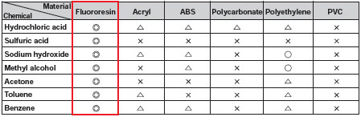
Note: Results depend on concentration.
Bending-resistant, Disconnection-resistant
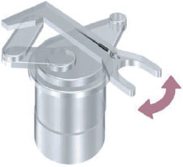
• Capable of withstanding one million repeated bends.
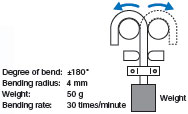
• A large number of independent fine fibers ensures good flexibility. Suitable for use on moving parts without easily
breaking.
breaking.
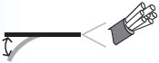
• Protective Stainless Spiral Tube is available for covering the fiber cable to protect it from accidental breaking due to
snagging or shock.
snagging or shock.
Heat-resistant
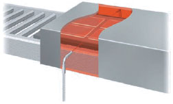
• Wide product variety for temperatures from 100 to 350°C.
Select the model according to heat-resistant temperature.
Select the model according to heat-resistant temperature.
Special Applications
Area Beam (Area Detection)
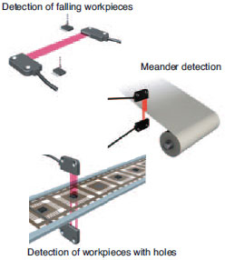
• Area beams are optimum for detecting workpieces presented in inconsistent positions, such as falling workpieces, or
for meander detection, or for detecting workpieces with holes.
for meander detection, or for detecting workpieces with holes.
• This Fiber Unit is ideal for meander detectin because it outputs the digital value in a linear relation to the interrupted
light distance.
light distance.
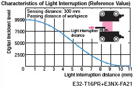
Liquid-level Detection
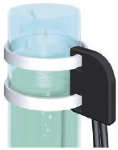
• Fiber Units for detecting liquid levels are available in two types: for tube mounting and liquid contact.
Tube-mounting Types
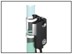
Detect the liquid level inside transparent tubes. Strap the Fiber Unit to a tube with band.
Liquid-contact Type

Detect the liquid level by direct contact with the liquid.
This model has excellent chemical-resistance because the Fiber Unit is covered in fluororesin.
Vacuum-resistant
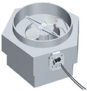
• Can be used under high vacuums of up to 10-5 Pa.
• Available in models with heat resistant up to 120 or 200°C.
Configuration Example for using under vacuum
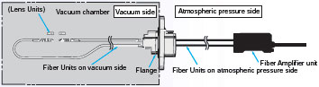
FPD, Semiconductors, and Solar Cells (Limited-reflective)
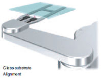
Glass-substrate Alignment
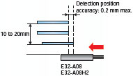
・Detection position accuracy: 0.2 mm max.
No variation in detection positions even if the sensing distance changes.
・Tilting workpiece does not affect detection.
No variation in detection positions even if the sensing distance changes.
・Tilting workpiece does not affect detection.
Glass-substrate Mapping
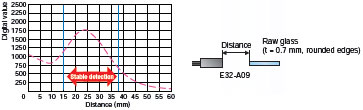
Stable detection is possible even for difficult-to-detect curved surfaces.
Glass Presence Detection in Wet Processes
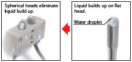
・Stable non-contact detection even with warped glass.
・The spherical heads ensure stable detection without being influenced by liquid.
・The spherical heads ensure stable detection without being influenced by liquid.
FPD, Semiconductors, and Solar Cells (Through-beam)
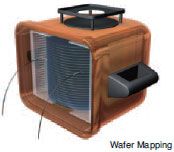
Wafer Mapping
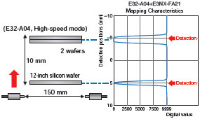
・Thin-profile design enables easy mounting on robot arms.
・Easy to adjust optical axis.
(Typical alignment error between mechanical and optical axes is only ±0.1°.)
・Reliably wafer detection, even when stacked closely together.
・Easy to adjust optical axis.
(Typical alignment error between mechanical and optical axes is only ±0.1°.)
・Reliably wafer detection, even when stacked closely together.
last update: May 23, 2013